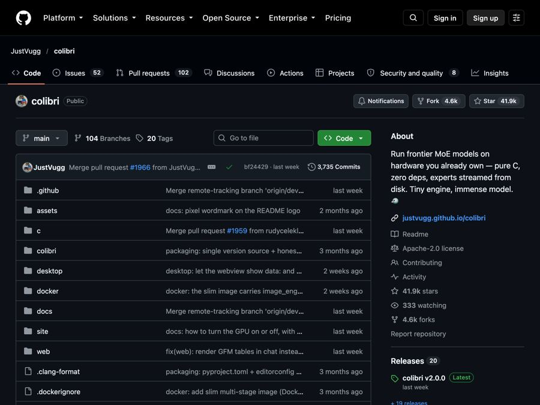

Colibri: run giant AI models on the computer you already own
Colibri runs huge open AI models on an ordinary computer by keeping a small part in memory and reading the rest from disk.

The problem it solves
The smartest AI models are huge. Running one on your own computer usually means buying an expensive graphics card, or several. So most people send their questions to a company's servers instead.
That works, but it has costs. You pay monthly. Your words leave your computer. And you depend on someone else's service staying up.
Colibri asks a simple question. What if you could run a giant model on the laptop or desktop you already have?
What it is
Colibri is a free, open-source program that runs very large open AI models on normal computers. Open source means anyone can read its code.
Here is the trick, in plain words. Many big models are built from lots of small "experts." For each word the model writes, it only uses a few of them. So Colibri keeps the always-needed part in your computer's memory (RAM) and leaves the rest on your disk. When the model asks for a certain expert, Colibri reads it from the disk. A smart cache (a short-term storage spot) learns which experts you use most and keeps them close.
A graphics card is optional. If you have one, Colibri uses it to go faster. If not, it runs on your normal processor.
The README lists thirteen engines today. Ten are chat models, including GLM, Kimi, DeepSeek, Qwen and others. One makes pictures. Two are built for making decisions.
Who it's for
- Privacy-minded people who want an AI helper that runs at home.
- Small businesses that want to try AI without sending data to outside servers.
- Writers, researchers and students curious to chat with a big model locally.
- Tinkerers who enjoy watching how AI models actually work.
- Developers who want a local AI they can connect to their own apps and coding tools.
You do not need to be a programmer to try it on Windows. The setup is close to "download and double-click."
What you can do with it
From the README:
- One-step setup. It checks your memory, disk space and hardware, then recommends a model that fits.
- Resumable downloads. Stop a big download anytime. Run it again and it continues.
- A dashboard in your browser with a chat window, live stats, and light or dark themes.
- Watch the AI "think." A page called the Brain shows the model's experts lighting up as they are used.
- System One decisions. Give the model a document and a fixed list of allowed answers. It picks one and shows how sure it is, as a percentage.
- Image making with the Qwen-Image model.
- Images in. Some models can look at pictures you attach.
- Works with other apps. It acts like the OpenAI and Anthropic services, so tools built for them, including Claude Code, can talk to your local model instead.
How to start, step by step
What you need first: at least 8 GB of RAM (16 GB or more is better), about 22 GB of free disk space for the smallest model, and an internet connection for the download. A graphics card is optional.
On Windows (easiest):
- Go to the Colibri page on GitHub.
- Click the green Code button, then Download ZIP. Unzip the file.
- Double-click START-HERE.bat in the unzipped folder. If Python is missing, it offers to install it for you.
- Answer one question: which model. Press Enter to take the recommended one.
- Wait for the download. Colibri then opens its dashboard in your browser.
On a Mac (with Homebrew, a free installer for Mac tools), open Terminal and run:
xcode-select --install
brew install libomp git python
git clone https://github.com/JustVugg/colibri
cd colibri
./start-here.sh
Next time, just run START-HERE again. It starts right away with no new download.
Already use an AI coding helper? The README says you can ask it to set Colibri up for you by following the project's AI setup guide. It is told to ask you before big steps.
Good to know
- Big models can be slow. Running a giant model from disk is a trade. The README is honest about this. On the laptop where the project started, the biggest model wrote about one token (a word or part of a word) every ten to twenty seconds when cold. Smaller models run much faster. The setup helps you pick one that fits.
- Downloads are large. The smallest model needs about 22 GB. Bigger ones need far more.
- It runs on your computer. Your chats stay local. The download itself needs the internet.
- License, in plain words. Colibri uses Apache 2.0, so you can use, change and share it, even for work. But each AI model keeps its own license. For example, the README notes the Qwen-Image picture model is for non-commercial use only.
- No subscription. Colibri itself is free and runs without an outside AI account.
The bottom line
Colibri makes "run a giant AI at home" a real option for ordinary computers. It is not the fastest way to use a huge model, but it is free, private and surprisingly easy to set up. If you have the disk space, it is well worth a look.
Get it: github.com/JustVugg/colibri
📲 Watch the 30-second video on Instagram
Keep reading

DBX: one small free app to open and edit 100+ kinds of databases
DBX is a free, tiny app that lets you browse, search and edit over 100 kinds of databases, with an AI helper that writes queries for you.

PureMac: free up space on your Mac without a subscription
PureMac is a free, open-source Mac cleaner that removes junk, fully uninstalls apps, and never tracks you or tries to scare you.

Strata: run a big, private AI chatbot on your own gaming PC
A free one-click installer that runs a large Qwen AI model on a normal gaming PC, so your chats never leave your computer.